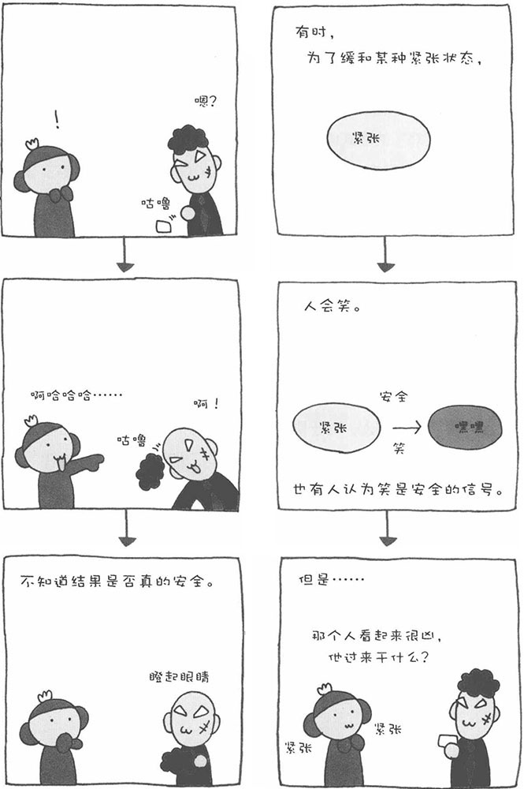

觉得开心或者看到有趣的事物时，我们会笑。最近有研究结果表明，经常笑可以提高人的免疫力。因此，笑受到了很大的关注。可是，我们到底为什么会笑呢？据科学家说，地球上的生物中，只有人类和一部分猴子会笑。的确，我们从没见过鸡或鸭子笑，如果有会笑的青蛙，那也怪吓人的。
笑的种类有很多种，科学家们对此众说纷纭。弗洛伊德、康德（1724-1804，德国哲学家）、柏格森（1859-1941，法国哲学家，1929年诺贝尔文学奖获得者）等学者都对"笑"进行了较为深入的研究。
接下来，我为大家介绍一种关于笑的理论，也许这种理论已经超越了心理学的范畴。美国精神病学家V·S·拉马钱德兰在《大脑？还是幽灵？》一书中有这样一段有趣的叙述："当发生了意想不到的、需要提高警惕的事情时，人会紧张起来；但当弄清情况后，如果发现这个事情对自己并没有威胁，人会笑出来。"
比如，突然有一个身穿黑衣、凶神恶煞的大汉来到您的面前，您会有一种不祥的预感，于是提高了警惕，变得紧张起来。可是，没想到那人忽然面带微笑地向您问路。在那一瞬间，您不安的心放了下来。与此同时，您还发现那人的门牙上竟然粘着一块菜叶，于是便忍不住笑了出来。
也就是说，人感到危险时会紧张，但当发现危险并不存在时，就会自然而然地笑出来。在心理学中，对这种状况的解释是：笑是缓和某种紧张状态的方法，人通过笑可以达到心理上的平衡。"讨好地笑"和"谄媚地笑"也是缓和紧张状态的方法。
